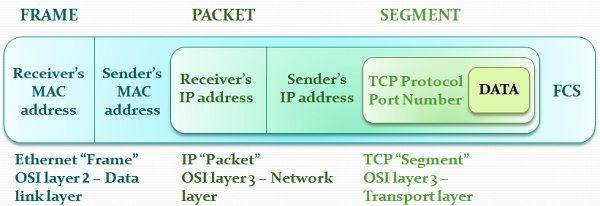
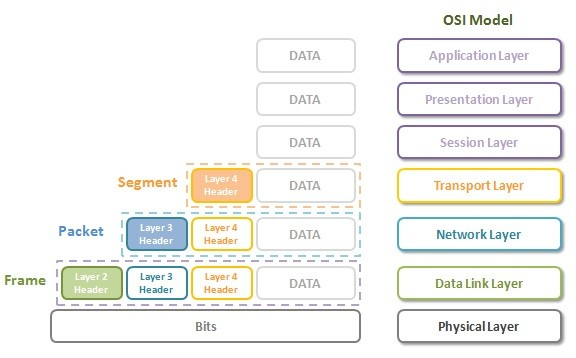
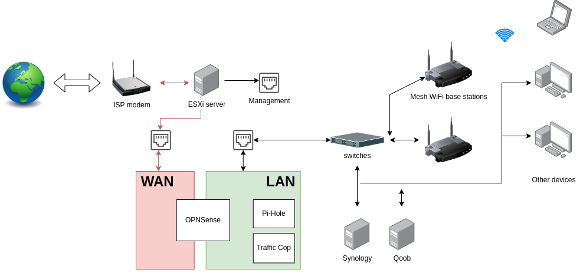
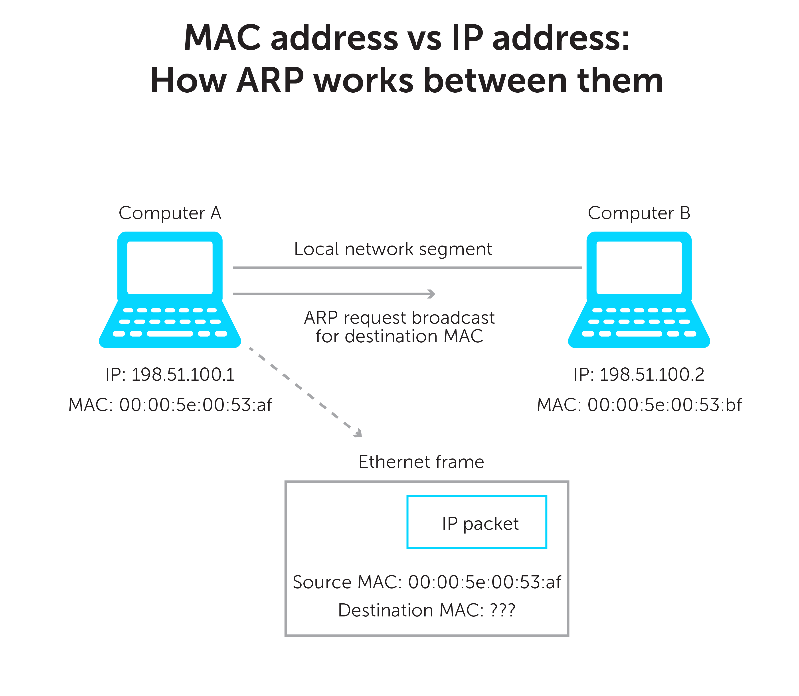

TCP/IP Model
The TCP/IP model is a set of rules and steps that explains how data moves from one device to another over a network or the internet.
- How data is created
- How it is packed
- How it travels
- How it is delivered correctly
What is the TCP/IP Model?

🌐 Real-World Example (VERY IMPORTANT 💡)
📱 You open google.com on your phone.
- Your phone creates a request
- Data is broken into small packets
- Packets travel through routers on the internet
- Google’s server receives and understands the request
- Google sends the response back (page loads)
🧩 TCP/IP Model Layers (CCST Focus ⭐)
| Layer No. | Layer Name | What It Does |
|---|---|---|
| 4️⃣ | Application | What the user uses |
| 3️⃣ | Transport | How data is delivered |
| 2️⃣ | Internet | IP address & routing |
| 1️⃣ | Network Access | Physical sending of data |
TCP/IP Data Flow

🟦 Layer 4: Application Layer
Closest layer to the user. Allows apps and software to use the network.
Common Protocols:- HTTP / HTTPS → Websites
- FTP → File transfer
- SMTP → Sending emails
- DNS → Name → IP conversion
Typing
https://youtube.com👉 Application layer understands: “User wants a website”
🟩 Layer 3: Transport Layer
- TCP → Reliable, safe, slower
- UDP → Fast, no guarantee
🏦 Online banking → TCP (accuracy matters)
Exam Trick:
TCP = Reliable
UDP = Fast
🟨 Layer 2: Internet Layer
Handles IP addresses and routing.
Main Protocol: IPExample:
- Your IP → 192.168.1.10
- Google IP → 142.250.182.14
🟥 Layer 1: Network Access Layer
Responsible for physical data transmission.
Examples:- Ethernet cable
- Wi-Fi
- Network Interface Card (NIC)
⚡ Electrical signals (cable)
📡 Radio waves (Wi-Fi)
🔁 How Data Flows (VERY IMPORTANT 🔥)
Application → Transport → Internet → Network Access
📥 Receiving Device
Network Access → Internet → Transport → Application
📌 Same layers, reverse direction
“Application creates data, Transport delivers it, Internet routes it, Network sends it.”
OSI Model (Open Systems Interconnection)
The OSI Model is a 7-layer conceptual model that explains how data moves in a network step by step.
📌 It is a learning + troubleshooting model
TCP/IP → How the internet actually works
OSI → How humans understand and fix network problems
OSI Model – 7 Layers Overview

🧠 Why OSI Model is IMPORTANT for CCST (Very Important 🔥)
As a network support technician, your main job is troubleshooting.
- ❓ Is the cable faulty?
- ❓ Is IP missing?
- ❓ Is the application down?
📌 Instead of guessing, you check layer by layer.
🧩 OSI Model – 7 Layers (Top to Bottom)
| Layer No. | Layer Name | Easy Meaning |
|---|---|---|
| 7️⃣ | Application | What the user uses |
| 6️⃣ | Presentation | Format & security |
| 5️⃣ | Session | Connection control |
| 4️⃣ | Transport | Reliable delivery |
| 3️⃣ | Network | IP & routing |
| 2️⃣ | Data Link | MAC & switching |
| 1️⃣ | Physical | Cables & signals |
OSI 7 Layers Explained (Detail)

🧠 Memory Trick (EXAM GOLD 🥇)
- Application
- Presentation
- Session
- Transport
- Network
- Data Link
- Physical
🟦 Layer 7: Application Layer
Direct interaction with user applications.
Examples:- Web browser (Chrome)
- Email client (Gmail, Outlook)
- HTTP / HTTPS
- FTP
- SMTP
- DNS
❌ Website not opening
✔ First check Application layer
🟩 Layer 6: Presentation Layer
- Data formatting
- Encryption & decryption
- Compression
- HTTPS encryption 🔐
- JPEG, PNG images
- MP4 videos
🟨 Layer 5: Session Layer
- Session start
- Session maintenance
- Session termination
- Staying logged into a website
- Session timeout after inactivity
🟥 Layer 4: Transport Layer
- End-to-end delivery
- Error correction
- Flow control
- TCP → Reliable, safe
- UDP → Fast, no guarantee
- File download → TCP
- Video streaming → UDP
TCP = Reliable
UDP = Fast
🟪 Layer 3: Network Layer
- IP addressing
- Routing between networks
🧠 Examples:
- No IP address
- Router not working
🟧 Layer 2: Data Link Layer
- MAC addressing
- Switching
- Error detection (frames)
- Switch
- Network Interface Card (NIC)
- Switch port disabled
- MAC address issue
⬛ Layer 1: Physical Layer
- Electrical signals
- Optical signals
- Radio waves
- Ethernet cable
- Fiber cable
- Wi-Fi signals
- Cable unplugged ❌
- No Wi-Fi signal ❌
OSI vs TCP/IP Model

OSI vs TCP/IP Diagram

🔁 How Technicians Troubleshoot (Real Method)
1️⃣ Check cable
2️⃣ Check switch
3️⃣ Check IP
4️⃣ Check service
📌 This saves TIME and avoids confusion.
OSI Model helps you understand WHERE the network problem is, layer by layer.
Frames and Packets (Networking Fundamentals)
Packets are used by routers (IP)
Frames are used by switches (MAC)
👉 This one line alone answers many CCST exam questions.
📦 What is a Packet?
A packet is a small piece of data created at the Network Layer (Layer 3). It contains IP addresses, so routers know where the data should go.
- Travel between different networks
- Be routed using IP addresses
🧠 What does a Packet contain?
- ✅ Source IP address
- ✅ Destination IP address
- ✅ Actual data (payload)
🌍 Real-World Example
Your laptop → Google server
Packets created:
- From IP: 192.168.1.10
- To IP: 142.250.182.14
Because routers work with IP addresses.
Difference Between Frames and Packets

📨 What is a Frame?
A frame is a data unit at the Data Link Layer (Layer 2). It contains MAC addresses and is used for local delivery.
- Communication inside the same network (LAN)
- Delivery from one device to the next
🧠 What does a Frame contain?
- ✅ Source MAC address
- ✅ Destination MAC address
- ✅ The packet inside it
🏠 Real-World Example (Home Network)
- Laptop → Wi-Fi Router
- Router → Switch
00:1A:2B:3C:4D:5E
👉 Switches read frames, not packets
🧩 Packet vs Frame (Side-by-Side – VERY IMPORTANT)
| Feature | Packet | Frame |
|---|---|---|
| OSI Layer | Layer 3 (Network) | Layer 2 (Data Link) |
| Address Type | IP Address | MAC Address |
| Used by | Routers | Switches |
| Scope | Between networks | Within same network |
| Contains | Data | Packet + MAC info |
Packets, Frames & OSI Layers

🚚 Data Journey (Step-by-Step Flow)
2️⃣ Transport layer breaks data
3️⃣ Network layer creates packet (IP)
4️⃣ Data Link layer wraps packet into frame (MAC)
5️⃣ Physical layer sends bits (0s & 1s)
👉 This process is called encapsulation
🔁 What Happens at Each Device?
• Creates packet
• Wraps it inside a frame
🔀 Switch
• Looks only at MAC address
• Forwards frame
• ❌ Does NOT care about IP
🌐 Router
• Removes old frame
• Reads packet (IP)
• Decides next path
• Creates new frame for next network
📌 Frame changes at every hop
📌 Packet usually stays the same
🛠️ CCST Troubleshooting Example (Real Exam Logic)
| Symptom | Likely Issue |
|---|---|
| Switch light OFF | Frame / Layer 2 issue |
| No IP address | Packet / Layer 3 issue |
| Can ping IP but website not loading | Application layer issue |
Frame = Local delivery (MAC)
Packet = Global delivery (IP)
Addressing Concepts in Networking
IP = Who (device)
MAC = Which hardware
Port = Which application
👉 If you remember this one line, half of addressing questions are solved ✅
🔹 Why Addressing is Needed
Imagine sending a courier without:
❌ Flat number
❌ Person name
Same in networking:
- IP finds the device
- MAC finds the hardware on local network
- Port finds the application
Home Network Addressing Overview

🧩 1️⃣ IP Address (Network Layer – Layer 3)
An IP address is a logical address that uniquely identifies a device on a network.
🔹 Examples
IPv6: 2001:db8::1
🔹 Types of IP
- Private IP → Inside LAN (home / office)
- Public IP → On the internet
🧠 Easy Example
Google server IP → 142.250.182.14
👉 Routers use IP addresses to route packets 🌐
🧩 2️⃣ MAC Address (Data Link Layer – Layer 2)
A MAC address is a physical (hardware) address permanently assigned to a network device.
🔹 Example
🔹 Key Points
- Fixed to NIC (Network Interface Card)
- Works inside the local network (LAN)
- Used by switches
🧠 Easy Example
Laptop → Router → Switch
Communication happens using MAC addresses (frames)
👉 Switches read MAC, not IP
MAC Address vs IP Address

🧩 3️⃣ Port Number (Transport Layer – Layer 4)
A port number identifies which application or service should receive the data.
🔹 Common Port Numbers (VERY IMPORTANT)
| Service | Port |
|---|---|
| HTTP | 80 |
| HTTPS | 443 |
| FTP | 21 |
| SSH | 22 |
| SMTP | 25 |
| DNS | 53 |
🧠 Easy Example
https://google.com
Behind the scenes:
IP → Google server
Port → 443 (HTTPS)
👉 Same server, different apps → different ports
🧠 How All Three Work Together (Real Flow)
IP Address → Finds the device (server)
MAC Address → Finds device in local network
Port Number → Finds the correct application
🔁 Real Example
Destination Port → 443
Destination MAC → Router’s MAC (local hop)
🧩 Comparison Table (Exam Friendly)
| Feature | IP Address | MAC Address | Port Number |
|---|---|---|---|
| OSI Layer | Layer 3 | Layer 2 | Layer 4 |
| Identifies | Device | Hardware | Application |
| Used by | Routers | Switches | TCP / UDP |
| Scope | Global | Local (LAN) | Application level |
| Changes? | Yes (DHCP) | No (mostly) | No |
🛠️ CCST Troubleshooting Examples
| Problem | Likely Cause |
|---|---|
| No internet, no IP | IP addressing issue |
| Devices not visible in LAN | MAC / Layer 2 issue |
| Website opens, email not working | Port issue |
IP = Where the device is
MAC = Which device it is
Port = Which app it is